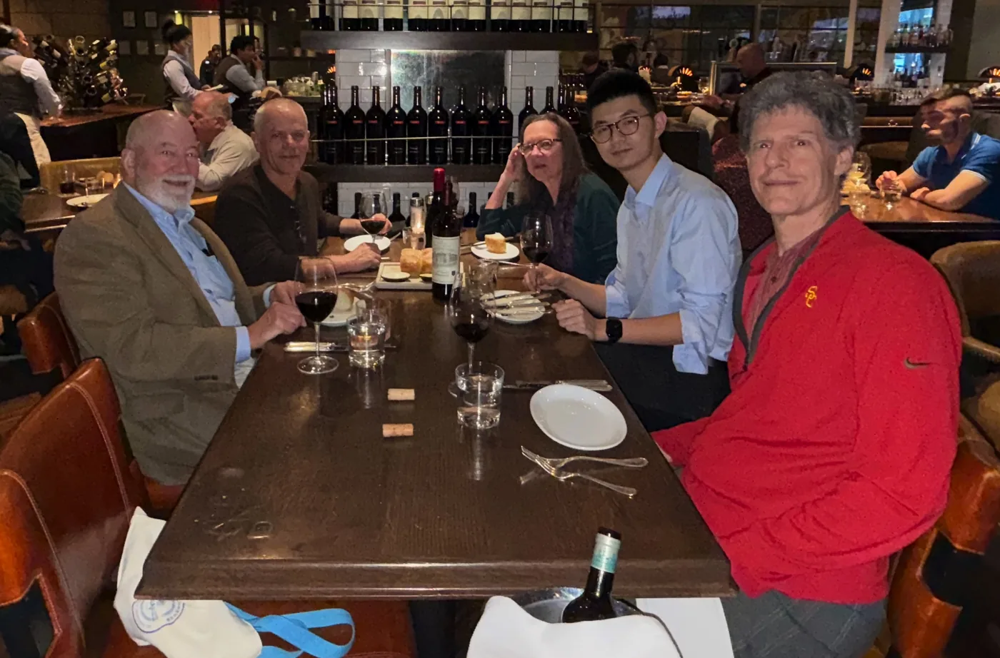
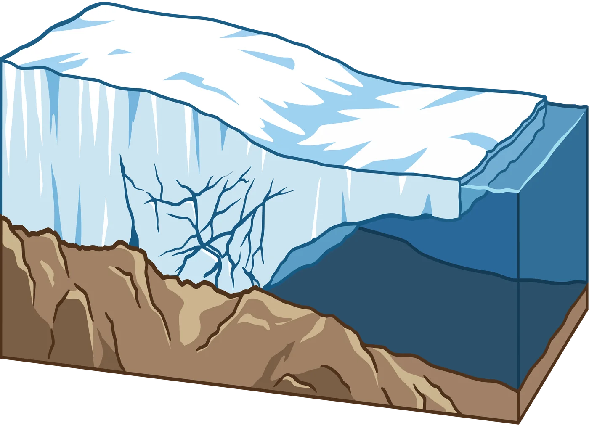
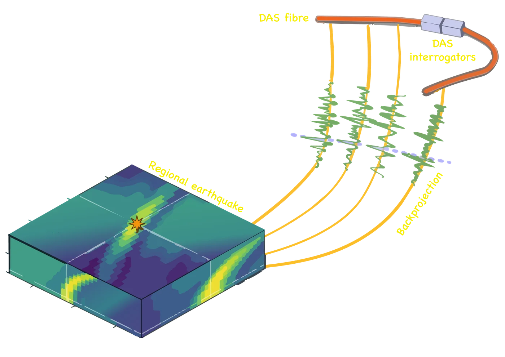
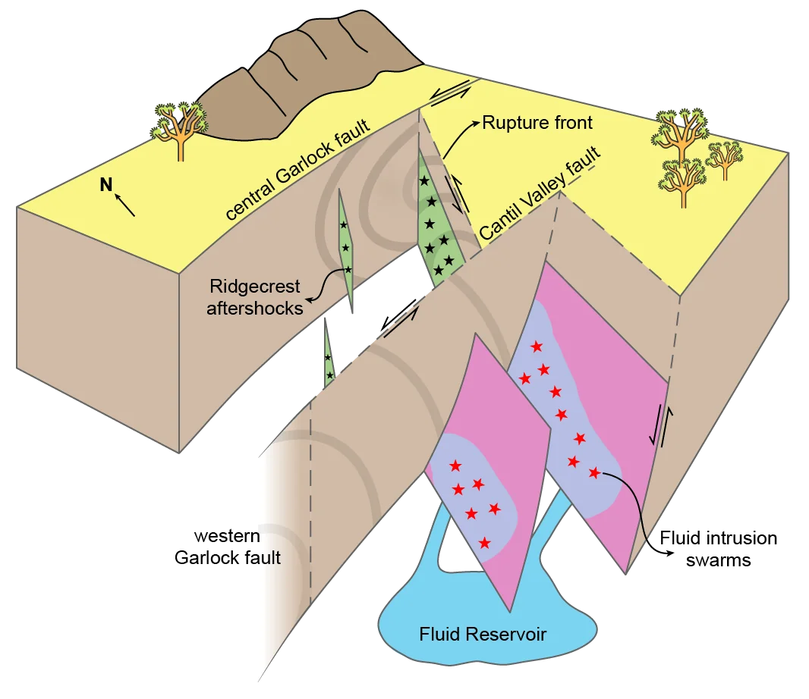
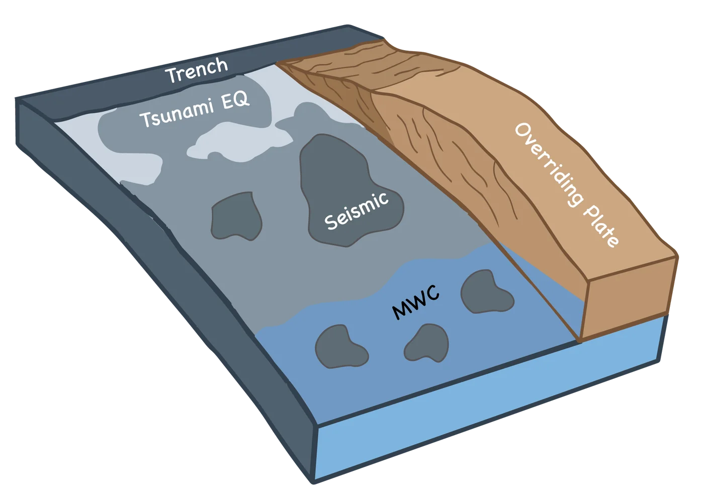

About
Biography
I am a postdoctoral fellow at the Seismological Laboratory, California Institute of Technology (Caltech). I obtained my Ph.D. in Geological Sciences from the University of Southern California (USC) in 2025. Prior to my doctoral studies, I served as a research assistant at the Institute of Geophysics, China Earthquake Administration, from 2020 to 2021. I received my B.Sc. in Geophysics from Peking University (PKU) in 2020.
Research Interests
As an observational geophysicist, my research focuses on applying seismological approaches to constrain the dynamics and evolution of tectonic plates, the cryosphere, and other terrestrial bodies. My work aims to uncover fundamental physical principles that govern seismic behavior across diverse geophysical systems. I am particularly interested in how transitions and interactions between material phases (solid, fluid, and gas) shape, and are shaped by, Earth environments

Dinner with Heidi, John, Yehuda and Tom after my PhD defense
News
- 09/2026 My paper Resolving sub-kilometer cascading ruptures of moderate earthquakes with Distributed Acoustic Sensing is accepted by JGR: Solid Earth
- 01/2026 My paper Large megathrust earthquakes in cold mantle wedge corners under lawsonite blueschist facies is accepted by Nature Communications
- 06/2025 I start my new position as a postdoctoral scholar research associate at Caltech
- 04/2025 I successfully defended my Ph.D. thesis!
- 01/2025 I received postdoc fellowships from both SeismoLab at Caltech and IGPP, UCSD
Resume
Education
Doctor of Philosophy in Geological Sciences
2021 - 2025
University of Southern California, Los Angeles, CA
- Advisors: John E. Vidale & Yehuda Ben-Zion
- Dissertation: Dynamics and Structure of Subduction Zones Unveiled through Novel Seismological Techniques
Bachelor of Science in Geophysics
2016 - 2020
Peking University, Beijing, China
- Thesis Advisor: Xiaofei Chen
- Thesis: Frequency-Bessel Transform Method to Extract Higher-Mode Rayleigh Dispersion Curves
Professional Experience
Postdoctoral Scholar Research Associate
2025 - Now
Seismological Laboratory, Caltech, Pasadena, CA
Selected Awards
- 2026 3rd Place, Caltech Poker Tournament
- 2025 Cecil H. and Ida M. Green Postdoctoral Fellowship, IGPP, UCSD
- 2025 Geophysics Option Postdoctoral Fellowship, Caltech
- 2024 Earth Sciences Graduate Student Research Award, USC
- 2020 Distinguished Graduate, PKU
- 2020 Distinguished Graduate, Beijing City
- 2019 Outstanding Research Award, PKU
Projects

Thermal and mechanical dynamics of grounding zone
Glacial mass loss occurs primarily through basal melting and calving, making grounding-zone dynamics critical to ice sheet stability. However, fine-scale thermo-mechanical processes operating at grounding lines remain poorly understood. Using a high-density seismic deployment at Constellation Inlet, West Antarctica, we recorded over 100,000 englacial icequakes above the grounding line within a single month. Based on the full moment tensor inversions and spatiotemporal distribution of icequakes, we propose a tidally coupled thermo-mechanical cycle. By demonstrating that thermal and mechanical dynamics at the grounding zone are deeply intertwined, our findings highlight a critical interaction for accurately predicting glacial responses to ocean warming.

Earthquake source imaging with DAS
Understanding how earthquakes radiate energy is essential for assessing seismic hazards and understanding earthquake physics. While conventional seismic networks provide reliable information about earthquake ruptures, capturing the finer, high-frequency details of how an earthquake unfolds often requires extremely dense sensor arrays. I explore the use of DAS in earthquake source imaging. I also developed a method that combines traditional seismic data with these new fiber-optic measurements. My findings show that DAS can reveal bursts of energy during a rupture with unprecedented spatial detail. Utilizing existing telecommunications infrastructure in this way provides a powerful, cost-effective tool to complement existing networks, ultimately improving our ability to monitor active faults and understand earthquake physics.

Understanding complex fault systems
The extent to which dynamic earthquake ruptures propagate through structural discontinuities on faults is a fundamental determinant of earthquake magnitude and the related seismic hazard. While empirical criteria often rely on fault surface geometry, such frameworks often fail to capture complex structural connectivity at seismogenic depths. By integrating structural geology, hydrology, and seismic observations augmented by machine learning and distributed acoustic sensing, we resolve the fine-scale architecture of a key extensional stepover on the Garlock fault. A previously underappreciated subsurface structure, alongside weakened strike-slip zones within the stepover, suggests substantially stronger inter-segment connection than previously inferred, implying that the usage of integrated, multi-physics subsurface imaging can constrain the upper limits of seismic hazard more robustly.

Megathrust earthquakes in cold mantle wedge corners
Giant megathrust earthquakes typically occur above the upper-plate Moho or the 350°C isotherm. However, large earthquakes also occur within the mantle wedge corner (MWC) at 35-55 km depth at cold subduction zones, such as the Kermadec, Japan Trench, and Chilean margins. I investigate the frictional behavior of lawsonite blueschist metagreywacke, potentially found in cold subduction channels, to better understand the control of metamorphic grade on such first-order variations in seismogenic depth. We perform velocity-step experiments on metagreywacke gouge under wide range of confining pressures and temperatures, capturing the unstable friction regime and the brittle-to-flow transition. The constitutive behavior of metagreywacke indicates a potential seismogenic behavior at high temperatures below the Moho. Large megathrust earthquakes in the mantle wedge corner may develop in the lawsonite blueschist metasediment channel of cold subduction slabs.
Publications
* Only first / corresponding-author papers are listed. Full list available on [Google Scholar]
- [8] Zhang, H. et al., Crystallization and breaking of ice at the grounding line under the tidal machine (in prep.)
- [7] Zhang, H., Guo, H., Salinas, M., Dolan, J.F. & Zhan, Z., Hidden structural linkages redefine seismic hazard limits of the Garlock fault (Science Advances, in revision)
- [6] Zhang, H. & Zhan, Z. (2026) Resolving sub-kilometer cascading ruptures of moderate earthquakes with Distributed Acoustic Sensing, JGR: Solid Earth, 131, e2026JB034841
- [5] Zhang, H., Barbot, S., Yang, Z., Zhang, L., Liu, M. & Platt, J. (2026) Large megathrust earthquakes in cold mantle wedge corners under lawsonite blueschist facies, Nature Commun., s41467-026-70315-4
- [4] Zhang, H., Vidale, J.E. & Wang, W. (2025) Aftershocks on the planar rupture surface of the deep-focus Mw 7.9 Bonin Islands earthquake, The Seismic Record, 5(1): 35-43
- [3] Zhang, H., Vidale, J.E. & Wang, W. (2024) Scattering evidence for an ancient subducted slab using the novel raypath P*PKP, Geophy. Res. Let., 51, e2024GL110130
- [2] Zhang, H. & Ben-Zion, Y. (2024) Enhancing regional seismic velocity model with higher-resolution local results using sparse dictionary learning, JGR: Solid Earth, 129, e2023JB027016
- [1] Zhang, H., Meng, H. & Ben-Zion, Y. (2023) Lateral Variations Across the Southern San Andreas Fault Zone Revealed from Analysis of Traffic Signals at a Dense Seismic Array, Geophy. Res. Let., 50, e2023GL103759
Photos
Contact
Email:
Location:
South Mudd Room 266, 1200 E. California Blvd., Pasadena, CA 91125
Last Update: August 2026